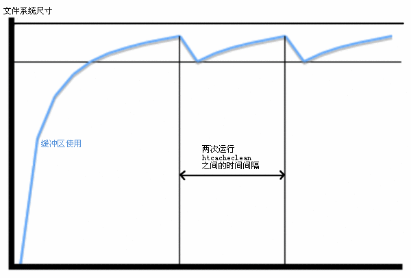

Apache HTTP Server 版本2.2

Apache HTTP Server 版本2.2

这篇文档是对mod_cache、mod_disk_cache、mod_mem_cache、mod_file_cache和htcacheclean参考文档内容的增补。它描述了如何利用Apache的缓冲特性来加速web和代理(proxy)服务，同时避免一些常见的问题和配置错误。

从Apache2.2起，mod_cache和mod_file_cache将不再是试验模块，它们已经足够稳定，可以用于实际生产中了。这些缓冲体系提供了一个强有力的途径来加速原始web服务器(origin webserver)和代理服务器(proxy)的HTTP处理速度。
mod_cache以及它的支持模块mod_mem_cache和mod_disk_cache提供了智能的HTTP缓冲。内容(content)本身被存储在缓冲区中，mod_cache的目的在于管理控制内容缓冲能力的各种HTTP头和选项。它可以同时处理本地的内容和代理的内容。mod_cache被设计为同时针对简单的和复杂的缓冲配置，以用于处理代理的内容、动态的本地内容、必须加速访问的随时间而改变本地文件。
另一方面，mod_file_cache实现了一个更基本的、但是在某些情况下更有效的缓冲形式，它避免了主动确保URL缓冲能力所需的维护复杂性，mod_file_cache通过提供文件句柄(file-handle)和内存映射(memory-mapping)的技巧来维持一个自Apache最后一次启动以来的文件缓冲区。同样地，mod_file_cache的目标是改善不常修改的本地静态文件的访问时间。
由于mod_file_cache提供了一个相对简单的缓冲实现，除了CacheFile和MMapStatic文档的特定段落之外，这篇指南的说明覆盖了mod_cache的缓存体系结构。
为了更好的理解这篇文档，你应当熟悉HTTP的基础知识，并且已经阅读过从URL到文件系统的映射和内容协商这两篇用户指南。
| 相关模块 | 相关指令 |
|---|---|
在一个请求的生存期中，mod_cache内可能会发生两个主要阶段。首先，mod_cache将是一个URL映射模块，也就是说，如果一个URL已经被缓存并且这个缓存尚未失效，该请求将由mod_cache直接处理。
这也意味着在处理一个请求时通常还要发生的其他阶段：比如由mod_proxy或mod_rewrite处理的阶段，将不会发生。不过，这正是将内容缓存起来的关键所在。[虽然某些阶段被省略了，但这正是启用缓冲特性的初衷：减少处理步骤以提高速度。]
如果这个URL不在缓存中，mod_cache将会在请求的处理过程中添加一个过滤器。在Apache使用通常的方法定位内容之后，该过滤器将会在内容被用于服务以后运行。如果该内容被确定为可以缓存，那么它将被保存在缓冲区中以便为将来的请求提供服务。
如果该URL存在于缓存中并且已经失效的话，该过滤器同样会被添加，但是mod_cache将会同时向后端(backend)提交一个条件请求以确定缓存的版本是否是当前的最新版本。如果是最新版本，那么它的元信息(meta-information)将会被更新并且使用这个缓存的版本来服务于该请求。如果不是最新版本，那么过滤器将使用刚才为请求提供服务的最新内容更新缓存。
在缓存本地生成的内容的时候，将UseCanonicalName指令设置为 On 可以显著提高缓存的命中率。这是由于为缓冲区提供内容的虚拟主机的主机名是缓冲键(cache key)的组成部分。当该指令设置为 On 时，具有多个服务器名或别名的虚拟主机将不会产生不同的缓存实体，而是按照各自的规范主机名(canonical hostname)来存储。
由于缓存发生在将URL映射到文件系统的阶段，缓存的文档将只被用来响应对URL的请求。通常情况下这没什么重大意义，但是当你使用服务端包含(Server Side Includes)时，这一点将显得特别重要：
<!-- 下面的包含可以被缓存 --> <!--#include virtual="/footer.html" --> <!-- 下面的包含不可以被缓存 --> <!--#include file="/path/to/footer.html" -->
如果你使用服务端包含(SSI)，并且希望从缓冲中获得快速服务好处，你应当使用virtual类型的包含。
缓存实体的默认失效周期是一个小时(3600秒)，当然这个可以轻易的通过CacheDefaultExpire指令来修改。这个默认值仅仅用在产生内容的原始资源没有明确指定失效时间或最后修改时间的情况下。
如果一个应答没有包含Expires头但却包含Last-Modified头时，mod_cache可以根据CacheLastModifiedFactor指令推断出失效周期。
对于本地内容，mod_expires可以用来调整失效周期。
失效周期的最大值还可以通过CacheMaxExpire指令来控制。
当缓存的内容失效并且被从后端(backend)或内容提供者(content provider)那里重新请求的时候，Apache并不直接传递原始的请求，而是使用一个条件请求(conditional request)。
HTTP协议使用的一些头(header)允许客户端或缓冲区鉴别同一个内容的不同版本。例如，如果一个资源应答了"Etag:"头，那么就可以生成一个包含"If-None-Match:"头的条件请求；如果一个资源应答了"Last-Modified:"头，那么就可以生成一个包含"If-Modified-Since:"头的条件请求；等等。
对于这样的条件请求，应答的不同取决于内容是否匹配这些条件。如果一个请求包含一个"If-Modified-Since:"头，而请求的内容在指定的时间之后并未发生改变，那么一个简洁的"304 Not Modified"应答就可以了。
如果请求的内容已经变化，那么将按照原来没有条件请求的普通方式来应答。
和缓存相关的条件请求的好处有两个方面。首先，当向后端提交这样的条件请求时，如果从后端获得的内容与存储的内容相匹配(这很容易确定)，就可以避免由于传递全部资源所带来的开销。
其次，条件请求通常只让后端花费较小的开销。对于静态文件，通常所有的开销就是一个stat()或类似的系统调用以确定改文件的大小是否变化以及最后修改时间。这样，如果被请求的内容尚未变化，甚至在Apache缓存的本地内容已经失效的情况下，仍然可以从缓冲区中快速取得以服务于请求――只要从缓冲区读取比从后端读取更快(例如从内存缓冲区读取就比从硬盘上读取更快)。
如前所述，Apache中的缓冲存在两种不同工作方式。mod_file_cache的缓冲区负责维护Apache启动时的文件内容。当一个存在于该模块缓冲区中的文件被请求时，该请求将被拦截并用缓冲区中的内容为其提供服务。
mod_cache的缓冲区相对而言较为复杂。当服务于一个请求时，如果它先前并未被缓存，则缓冲模块将会判断该内容是否可以被缓存。判断应答的缓冲能力(cachability)基于以下条件：
CacheEnable和CacheDisable指令。CacheIgnoreNoLastMod指令，否则该应答还必须至少包含一个"Etag"、"Last-Modified"或"Expires"头才能被缓存。CacheStorePrivate指令，否则将不被缓存。CacheStoreNoStore指令，否则将不被缓存。简而言之，随时间变化的内容不应该被缓存；取决于特定请求的内容不应该被缓存；依赖于不被HTTP内容协商处理的请求的内容也不应该被缓存。[本句翻译的很没把握，原文：In short, any content which is highly time-sensitive, or which varies depending on the particulars of the request that are not covered by HTTP negotiation, should not be cached.]
如果你有某些动态内容，它们的变化依赖于请求发起者的IP地址或者差不多每5分钟就会发生改变，那么这些内容毫无疑问是不应该被缓存的。
另一方面，如果内容的变化依赖于各种HTTP头，更加明智的做法可能是通过使用"Vary"头进行缓存。
当mod_cache接收到一个后端发出的、带有"Vary"头的应答的时候，它将尽可能智能的处理它。如果有机会，mod_cache将会检查之后进入的请求的"Vary"头属性，然后用正确的缓冲区内容为这个请求提供服务。
举个例子来说，接收到一个带有如下"Vary"头的应答：
Vary: negotiate,accept-language,accept-charset
mod_cache将只会使用与原始请求的accept-language和accept-charset头匹配的缓存内容来提供服务。
mod_cache非常像一个内置的反向代理(reverse-proxy)。除非必须要向后端提交请求，否则缓冲模块将直接为请求提供服务。对于缓冲本地资源，这种模式彻底改变了Apache的安全模型。
因为遍历文件系统的目录结构以寻找可能存在的.htaccess文件是一个开销非常昂贵的操作，它部分地抵消了缓冲所带来的好处(加速请求)，所以mod_cache并不检查缓存中的实体是否被允许(authorised)用于提供服务。换句话说，只要mod_cache中缓存的内容尚未失效，那么它们将被直接用于为请求提供服务。
举例来说，如果你为某个资源按照IP地址配置了访问许可，你必须要确保这些内容不被缓存。你可以使用CacheDisable指令或mod_expires模块达到这个目的。不做权限检查的mod_cache模块非常像一个反向代理：缓存内容并用缓存的内容向任意IP地址上的任意客户提供服务。
因为终端用户的请求可以由缓冲区直接提供服务，所以缓冲区自身便成为一个那些企图干扰、破坏内容的攻击者的攻击目标。很重要的、需要牢记的一点是：缓冲区必须始终对运行Apache的用户是可写的。这正好与通常的原则：始终保持所有内容对运行Apache的用户不可写，完全相反！
如果运行Apache的用户是潜在的不安全用户，比如，通过一个有漏洞的CGI进程，就有可能对缓冲区发起攻击，当使用mod_disk_cache的时候，就很容易插入或者修改缓冲区中内容。
这样一来，运行Apache的用户就会增加一个与其它类型的攻击相比更加危险的安全隐患。如果你正在使用mod_disk_cache ，你必须时刻牢记：确保为Apache及时打上所有的安全补丁并且使用suEXEC以一个不同于运行Apache用户的其他用户身份运行CGI进程。
当将Apache作为一个缓冲代理服务器运行的时候，将可能存在一个所谓"缓存中毒"的问题。"缓存中毒"是一个泛称术语，用于指代各种造成代理服务器从后台检索到错误内容的攻击。
举个例子来说，如果你运行Apache的系统所使用的DNS服务器发生了DNS缓存中毒，攻击者将可能欺骗Apache连接到一个错误的服务器去请求内容。另一个例子是所谓的HTTP请求走私(request-smuggling)攻击。
这篇文档并不是深入探讨HTTP请求走私的地方(你应当去问google)，但有一点你必须知道：攻击者可以通过制造一连串的请求并利用原始web服务器的漏洞，达到完全控制代理服务器所检索到的内容的目的。
| 相关模块 | 相关指令 |
|---|---|
打开文件的动作本身就是一个造成延时的原因，特别是打开网络文件系统中的文件。通过维护一个保存高使用率文件的文件描述符的缓冲区，Apache就可以避免这种延时。当前，Apache提供了两种不同的文件句柄缓冲实现方法。
存在于Apache中最基本的缓冲方式是由mod_file_cache实现的文件句柄(file-handle)缓冲。胜于缓存文件内容本身，这个缓冲区维护一张打开的文件描述符表，用于保存在配置文件中使用CacheFile指令指定的文件的文件句柄。
CacheFile指令指示Apache在启动时打开某个文件并且为所有之后对这个文件的访问重复使用这个文件句柄。
CacheFile /usr/local/apache2/htdocs/index.html
如果你打算使用这种方式缓存大量的文件句柄，你必须确保操作系统对同时打开的文件的数量限制是足够的。
虽然使用CacheFile不会导致文件的内容被缓存，但是将会导致在Apache运行期间所有对文件的更改都不会生效。用于提供服务的文件的内容将从Apache启动以来一直保持不变。
如果在Apache运行期间文件被删除了，Apache将会持续维护一个打开的文件描述符并且使用Apache启动时文件的内容来提供服务。这个通常也意味着虽然文件已经被删除，并且不在文件系统中显示出来，但是释放的空间并不会被覆盖，直到Apache被停止、文件描述符被关闭。
mod_mem_cache也提供了一个文件句柄缓冲方案，可以通过CacheEnable指令来启用。
CacheEnable fd /
与mod_cache的方案相比，这种方案更加智能：缓存内容失效以后相应的句柄将不再被维护。
| 相关模块 | 相关指令 |
|---|---|
直接从系统的内存中提供服务通常是取得服务内容最快速的方法。从一个磁盘控制器读取文件，或者更糟糕的是从远程网络读取文件，其速度要慢上几个数量级。磁盘控制器通常涉及到物理动作，访问网络要受限于网络带宽，而访问内存通常仅仅只需要几毫微秒时间。
内存也许是目前单位字节最昂贵的存储器，保证它充分发挥作用非常重要。将文件缓存在内存中将导致系统可用内存的减少。正如我们将要看到的，在操作系统存在内存缓冲区的情况下，这不是一个大问题。但是当使用Apache自己的内存缓冲区的情况下，确保没有为缓冲区分配太多的内存就显得十分重要。否则，操作系统将会使用swap(虚拟内存/交换区)，这可能会导致性能急剧下降。
几乎所有现代的操作系统都由内核直接管理文件数据在内存中的缓冲。这是一个强有力的特性，并且在极大程度上操作系统做的非常好。比如在Linux系统上，让我们看看第一次读取一个文件和第二次读取同样的文件所需要的时间：
colm@coroebus:~$ time cat testfile > /dev/null real 0m0.065s user 0m0.000s sys 0m0.001s colm@coroebus:~$ time cat testfile > /dev/null real 0m0.003s user 0m0.003s sys 0m0.000s
即使对于这样的一个小文件，两次读取的时间差异也十分惊人。这是由于内核在内存中缓存了文件的内容。
通过确保在你的系统上始终存在"多余的"内存，你就可以确保会有越来越多的文件内容被缓存在这个缓冲区中。这是一个非常有效的内存缓冲途径，并且根本无需对Apache作出任何额外的配置。
另外，由于操作系统知道文件何时被修改或删除了，它就可以自动的从内存缓冲区中删除失效的文件内容。这是一个优于Apache自身的内存缓冲区的巨大优点，因为Apache无法得知文件被修改或删除的信息。
尽管操作系统自动管理的缓冲区有着性能和洞悉文件状态的优势，但是在某些情况下Apache自己的内存缓冲却更加有效。
首先，操作系统只能缓存它自己知道的文件，如果你将Apache当作一个代理服务器运行，那么Apache可以缓存非本地文件。如果你还想要无可匹敌的内存缓存速度，也必须使用Apache自己的内存缓冲区。
mod_file_cache提供了MMapStatic指令，它可以指示Apache在启动时将一个静态文件的内容映射到内存中(使用mmap()系统调用)。Apache将会使用内存中缓存的内容来为后来对这个文件的访问提供内容。
MMapStatic /usr/local/apache2/htdocs/index.html
使用了CacheFile指令以后，在Apache运行期间，对这些文件所做的任何修改都不会生效。
MMapStatic指令并不关心它占用了多少内存，所以你必须确保不要过度滥用这个指令。每个Apache子进程都将复制这部分内存，所以非常重要的一点是你必须确保被映射的文件不能占用太多的内存，以至于操作系统不得不使用交换区或虚拟内存。
mod_mem_cache提供了一个智能的HTTP内存缓冲方案。它同时也直接使用堆内存，这也意味着即使MMap不被你的操作系统所支持，mod_mem_cache仍然能够实现缓冲。
这种类型的缓冲可以通过以下方法启用：
# 启用内存缓冲 CacheEnable mem / # 将缓冲区的大小限制为 1 MB MCacheSize 1024
| 相关模块 | 相关指令 |
|---|---|
mod_disk_cache为mod_cache提供了一个基于磁盘的缓冲机制。和mod_mem_cache一样，这是一种智能缓冲，仅在缓存内容没有失效的情况下才从缓冲区中提供服务。
通常，这个模块将按如下方式进行配置：
CacheRoot /var/cache/apache/ CacheEnable disk / CacheDirLevels 2 CacheDirLength 1
请注意，因为缓冲区位于本地磁盘上，所以操作系统的内存缓冲区通常对它们的访问也有效。所以虽然这些文件被存储在本地磁盘上，但若这些文件被频繁的访问，那么很可能操作系统已经将它们保存在内存中了。
要将项目保存在缓冲区中，mod_disk_cache会为被请求的URL创建一个22字符的哈希值。该哈希值包含了该URL的主机名、协议、端口、路径、CGI变量，以确保多个URL不会发生碰撞。
这22个字符的取值范围是64个不同的字符，这意味着最多可以有64^22种可能的取值。例如，一个URL的哈希值可能是：xyTGxSMO2b68mBCykqkp1w 。这个哈希值将被用作缓存中对应于那个URL的文件名前缀，但是首先，这个哈希值将被按照CacheDirLevels和CacheDirLength指令分解成每一级目录名。
CacheDirLevels指定了子目录的层数，CacheDirLength指定了每级子目录名的字符数。使用上述例子的设置，这个哈希值将被转化成如下文件名前缀：/var/cache/apache/x/y/TGxSMO2b68mBCykqkp1w 。
使用这种技术的总体目标是减少某个特定目录中子目录或文件的个数，因为绝大多的文件系统在子目录或文件数过多的情况下的访问速度都会大打折扣。将CacheDirLength设置为"1"将使得任意一层目录下的子目录数都不会超过64，若为设为"2"则为64*64，依此类推。除非你有一个非常好的理由，否则"1"将是CacheDirLength指令的推荐值。
如何设置CacheDirLevels指令的值取决于你预计到将会在缓冲区中保存多少个文件。上述示例使用的"2"将会导致大约会有4096个子目录最终被建立，大约100万个文件被缓存，大约平均每个文件夹存储245个URL缓冲文件。
每个URL在缓冲区中至少会使用两个文件。通常，一个是包含了URL元信息(meta-information)的".header"文件，比如何时失效；另一个是".data"文件，包含了按字节复制的用于为URL提供服务的内容。
在通过使用"Vary"头进行内容协商的情况下，将会为该URL创建一个".vary"目录，该目录下将会保存多个适合不同协商内容的".data"文件。
虽然mod_disk_cache将会删除缓冲区中失效的文件，但是它并不负责维护整个缓冲区总共究竟应该占据多大空间以及至少要保留多少剩余空间。
作为弥补，Apache附带了一个htcacheclean工具，正如你从它的名字猜到的，它可以周期性的清理缓冲区。确定htcacheclean的运行频率以及缓冲区应当占有多大的磁盘空间是一件复杂的事情。必须要经过多次尝试和碰壁才能找到一个最佳值。
htcacheclean有两种运作模型。一种是作为后台守护进程运行，或者由cron周期性的调用。htcacheclean经常使用一个小时或更多的时间来处理非常巨大的(几十G)缓冲区，所以如果你是使用cron来调用它的话，建议你测试一下多长时间运行一次比较合适，以避免在同一时间运行多个实例。

图1: 一个典型的缓冲区增长和清理的周期
因为mod_disk_cache模块自身并不关心究竟实际使用了多少磁盘空间，所以你必须确保htcacheclean被配置为在清理了缓冲区以后预留了足够多的"增长空间"。